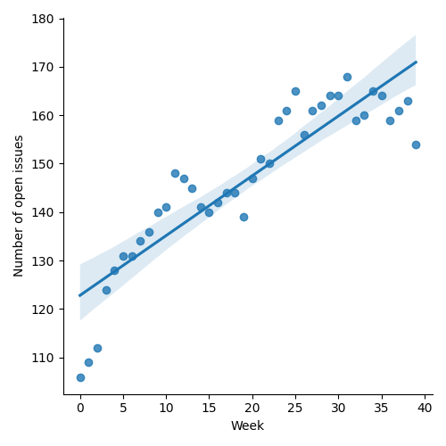
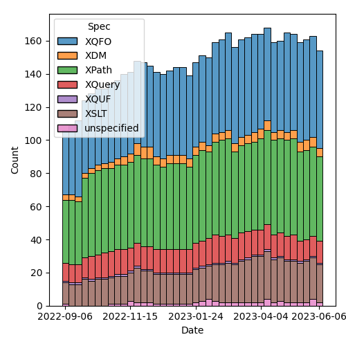
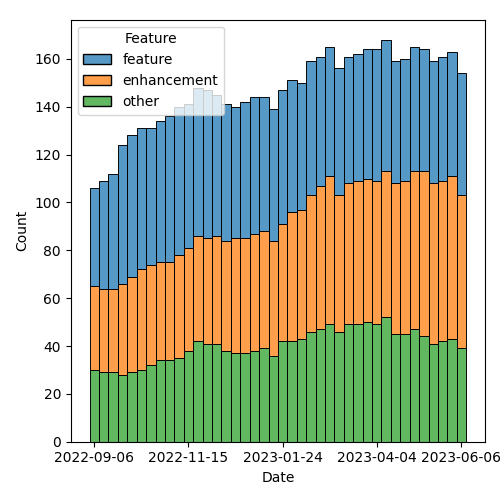

QT4 CG Meeting 038 Minutes 2023-06-13
Table of Contents
Agenda index / QT4CG.org / Dashboard / GH Issues / GH Pull Requests
Draft Minutes
Summary of new and continuing actions [0/8]
[ ]QT4CG-002-10: BTW to coordinate some ideas about improving diversity in the group[ ]QT4CG-016-08: RD to clarify how namespace comparisons are performed.[ ]QT4CG-026-01: MK to write a summary paper that outlines the decisions we need to make on “value sequences”- This is related to PR #368: Issue 129 - Context item generalized to context value and subsequent discussion.
[ ]QT4CG-029-01: RD+DN to draft spec prose for the “divide and conquer” approach outlined in issue #399[ ]QT4CG-029-07: NW to open the next discussion of #397 with a demo from DN See PR #449[ ]QT4CG-035-01: CG to make a few more (slightly more complex)map:keysexamples.[ ]QT4CG-035-02: CG to fix the type signature and examples inmap:filter.[ ]QT4CG-038-01: NW to attempt to craft some sort of proposal for dealing with stale issues.
1. Administrivia
1.1. Roll call [8/12]
Regrets BTW, CG, SF.
[ ]Anthony (Tony) Bufort (AB)[X]Reece Dunn (RD)[ ]Sasha Firsov (SF)[ ]Christian Grün (CG)[X]Joel Kalvesmaki (JK)[X]Michael Kay (MK)[X]John Lumley (JL)[X]Dimitre Novatchev (DN)[X]Ed Porter (EP)[X]C. M. Sperberg-McQueen (MSM)[ ]Bethan Tovey-Walsh (BTW)[X]Norm Tovey-Walsh (NW). Scribe. Chair.
1.2. Accept the agenda
Proposal: Accept the agenda.
Accepted.
1.2.1. Status so far…

Figure 1: “Burn down” chart on open issues

Figure 2: Open issues by specification

Figure 3: Open issues by type
1.3. Approve minutes of the previous meeting
Proposal: Accept the minutes of the previous meeting.
Accepted.
1.4. Next meeting
The next meeting is scheduled for Tuesday, 20 June 2023.
No regrets heard.
Are we going to take a summer break?
Proposal: Summer vacation! Skip the first four meetings in August.
Accepted.
1.5. Review of open action items [5/12]
[ ]QT4CG-002-10: BTW to coordinate some ideas about improving diversity in the group[ ]QT4CG-016-08: RD to clarify how namespace comparisons are performed.[ ]QT4CG-026-01: MK to write a summary paper that outlines the decisions we need to make on “value sequences”- This is related to PR #368: Issue 129 - Context item generalized to context value and subsequent discussion.
[ ]QT4CG-029-01: RD+DN to draft spec prose for the “divide and conquer” approach outlined in issue #399[ ]QT4CG-029-07: NW to open the next discussion of #397 with a demo from DN See PR #449[ ]QT4CG-035-01: CG to make a few more (slightly more complex)map:keysexamples.[ ]QT4CG-035-02: CG to fix the type signature and examples inmap:filter.[X]QT4CG-036-01: NW to draft a PR to resolve issue #414 along the lines MK proposed.- See PR #546
[X]QT4CG-036-02: MK to revise function identity following the discussion in meeting 036.[X]QT4CG-036-03: MK to revise PR #521 following the discussion in meeting 036.[X]QT4CG-037-01: NW to ask group if they’d like to take a summer holiday- See Summer break?
[X]QT4CG-037-02: MK to consider access to static variables in default function parameter expressions (and maybe everything possible inuse-when).
1.6. Review of open pull requests
The following editorial or otherwise minor PRs were open when this agenda was prepared.
- PR #545: 513: after arrow operator, inline function no longer needs parens
- PR #544: 536: disallow mixing of symbols in operator tokens
- PR #543: 382 simplify rules for whitespace in fn:deep-equal
- PR #542: Fixes a simple error in the description of XSLT error XTSE4020
- PR #541: Fix typo in XPath §2.4.5 - E1 should be tagged as code not as var.
Proposal: Accept these PRs.
Accepted.
1.7. New labels
MK describes his attempts to review the issues list.
- MK: I’ve made a few passes over the issues trying to find ones that
are actionable. We need to close things. I have added a label for
flagging issues that should be reviewed.
- … The proposal to close isn’t really about rejection, but also cases where the issue rambled on without a concrete proposal. Also things that were overtaken by events.
- NW: I propose to put them on the agenda as things we can close them without discussion.
- DN: Closing issues doesn’t make them go away. I propose a label “not recently active” less offending than “reject”. It feels exclusionary.
- NW: I think that’s a fair point, but at the same time, the progress of the group is easier to track if we don’t have a lot of open issues we’re never going to address.
- RD: Can we use project milestones? Things that we know don’t want for XPath 4 that we might want them for XPath 5 or the future. Could we have a future milestone.
- NW: How about a V.next project that we can move them to?
- MK: I think very few of the issues that I flagged were of that form. Most of them fell into the cateogory that this issue threw around a lot of good ideas that didn’t result in an actionable proposal. Something actionable would be better raised in a new issue.
- RD: So more of a “QT ideas” project.
- DN: In relation to what RD suggested, I recently sent email that
maybe it would be a good idea to have more software engineering
processes. Another good label would be that something depends on
something else.
- … I hope we don’t take another 10 years to produce something. We should propose specific features or proposals we’d like to see in the next version. Maybe one good way to do this would be if anybody can select three issues that they want to see in the next release. I would need help in how to create a proposal. Before making a proposal an issue should be discussed.
- NW: How about I put some issues on the agenda next week for a concrete discussion?
- RD: Could we also have a label “closed with no action” so it’s easy to identify the ones have been resolved and which ones have.
- MSM: So distinguish between “resovled” and “closed without action”.
- JK: Maybe a straw poll on the options? I like a slim todo list so I like closing issues.
- JL: I think we could put them in “closed with no current action” and keep that a separate category and we could go through them periodically and see if any have come back up.
- NW: Leave them open and tag them as not expecting action? I suppose that could work.
- MSM: Can you easily filter them out when you’re searching?
- NW: Yes, I think so.
- DN: Agree with JL. We can also assign priorities.
- NW: Yes, we can assign priorities.
The chair observes that we’ve spent thirty minutes talking about process. Proposes to move on for this week.
ACTION QT4CG-038-01: NW to attempt to craft some sort of proposal for dealing with stale issues
2. Technical Agenda
2.1. PR #538: Attempt to allow xs:string to be 'promoted to' xs:anyURI
- See PR #538
- NW: This one is mine. MK made several substantive comments just yesterday that I haven’t had time to address. I propose to defer it for a week. Does anyone have any additional comments they’d like to make at this time?
None heard.
2.2. PR #521: 518: Add transitive-closure() function
- See PR #521
- MK: We had a review of this recently. This is a substantial revision based on the comments from the last discussion.
MK reviews the prose of the specification.
- MSM: If I’m understanding correctly, the only way to specify the default behavior of “max” is not to specify that argument.
- MK: No, you can set it to the empty sequence explicitly if you like.
- MSM: Oh, okay.
- DN: First, I’m not sure I understand. There was a problem last time about whether to include the initial set of nodes or not. How is that solved?
- MK: You can set min=1, in which case you must take at least one step and you only get back the initial set if there’s a path to them. If you specify min=0, then you get back the starting node(s).
- DN: Maybe it should be explained more clearly. I don’t see the link. The second thing is that it’s no longer transitive closure if we have min/max. It’s some part of a transitive closure. So the name of the function is a little bit misleading.
- MK: I’m open to suggestions for new names, but it’s the transtive closure if you take the default arguments.
- DN: This seems very different from the notion of transitive closure that I’m used to.
- MSM: I think there’s room for improving the exposition. And DN makes
a good point that using min/max allows you to specify functions that
aren’t transitive closure. But the difference between 0/1 is just
the distinction of */+.
- … One explantion of transitive closure is to use a relation R and the exponation operator. R¹ means R. R² means R twice, R⁰ means the identity function. Then R+ means the union of the exponents 1 to unbounded and R* means the union from 0 to unbounded. The min/max are the exponents in the union. This does seem like a natural way to express the closures to me. Maybe the names min/max will make better sense if there’s some discussion of the exponent notation?
- … As regards the substance, I think this does allow what we need. Since I expect the most common use will be for transitive closure the name doesn’t bother me much.
- RD: I think it makes sense to have both the informal rule description that we have here, maybe splitting out the 0 case from the 1 case, and having the corresponding mathmatical definition in with it.
- DN: Can we look at the min/max section again?
- MK: Yes.
- DN: Now that I’ve read it several times, I think I understand it.
But it’s very difficult to understand. I think a parameter named
“include-initial-domain” would be very easy to understand.
- … What should the default be? That’s also an open question.
- … Maybe this is just a matter of preference.
- MK: My feeling was why restrict it to 0 or 1 when you can generalize it to “n”. As soon as you introduce the ability to have any value there, you find use cases for things like finding paths of a certain length.
- DN: Then find a better name, don’t call it transitive closure.
- MSM: I wonder if it would help just to add a pargraph after the min/max discussion pointing out which arguments correspond to variations of transitive closure?
Some discussion of whether or not the draft is clear about how the initial selection is handled.
- DN: This discussion makes it clear to me that a simple parameter would be easier to understand.
- NW: Of all the things I don’t understand, min/max isn’t one of them!
- RD: Maybe we should call this ‘transitive-dependency’ and explain
that flavors of transitive closure are available with specific
arguments.
- … I also don’t have a problem with min/max
- MK: Call it
transitive? The relation might be nothing to do with dependencies. Or call ittransitive-function? - JK: I support the proposal as it’s written. Even though I usually harp on names, I like the name because its default values really are transitive closure but adjusting the values let’s me change how it works.
- DN: The last thing I want to ask is, is this the first function we have that may not terminate? Do we need a new property for functions that may not terminate?
- MK: That’s an excellent question. I did think about that. It depends
a little bit on whether maps can be cyclic. The data model says they
can but we don’t have any constructors that allow you to make one.
- … There are XPath expressions that don’t terminate, but functions, I don’t know?
- DN: If the function may not terminate, this is a possible security vulnerability.
- MK: You can easily write an expression that will run for arbitrary long periods of time.
- MSM: What expressions are non-terminating?
- MK: Anything recursive might never terminate.
Some discussion of whether or not a recursive function can be written in XPath.
- RD: I’m wondering if, in regards to non-termination, it makes sense instead of unbounded to say “an implementation defined upper limit” or something that allows implementors to say you can run this but only for so long.
- MK: I also wondered if there was a way to ban the step function from creating new nodes. I don’t think so.
- DN: There are other functions like iterate-until. Something similar to this min and max should be added to them as well in order to assure that it’s possible to terminate them. We should allow all functions to terminate gracefully.
Some discusion of whether or not this discussion has lead to proposals for change that are actionable. The editor thinks not.
- NW: Okay, absent any better suggestions, I’ll call the question.
Proposal: accept this PR.
Accepted.
3. Any other business?
None heard.